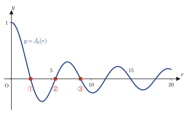
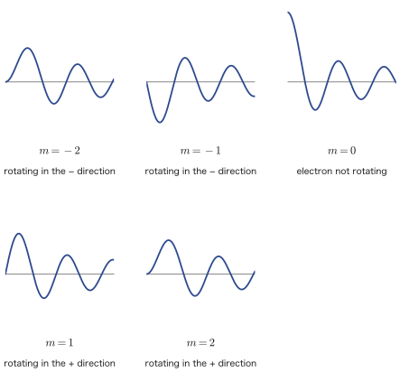
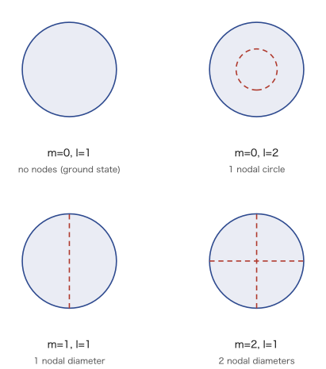

Chapter 47The Schrödinger Equation (Polar and Cylindrical Coordinates) and Bessel Functions
In the preceding chapters we solved the Schrödinger equation for the box-shaped infinite square well potential and for the harmonic oscillator, using the rectangular coordinate system (Cartesian coordinates, $x,y,z$). In nature and in the world of nanotechnology, however, systems with “circular” or “cylindrical” symmetry appear far more often than square boxes do—for example, disk-shaped quantum dots (artificial atoms in which electrons are confined two-dimensionally inside a semiconductor), cylindrical nanowires, or an electron orbiting an atomic nucleus (a “forerunner” of the hydrogen atom treated in the next chapter). The potential of such a system takes a simple form only when it is written not in the Cartesian coordinates $x,y,z$ but in polar coordinates $(r,\theta)$ or cylindrical coordinates $(r,\theta,z)$. Using the tools of “Coordinate Transformations and the Laplacian” that you acquired in Chapter 44, in this chapter we finally solve the Schrödinger equation for the circular and cylindrical infinite well potentials.
To state the conclusion first: when we separate variables in the ordinary differential equation in the radial direction (the $r$ direction), an entirely new function appears, one that can never be expressed by familiar elementary functions such as $\sin x,\cos x,e^x$. This is the Bessel function. The general theory of Bessel's differential equation itself (the indicial equation, series representations using the gamma function, the second fundamental solution $Y_n$ that is needed in addition when the order is an integer, and so on) was already studied in Chapter 41 (the part on ordinary differential equations). In this chapter we apply those tools to concrete physical problems—the circular and cylindrical infinite well potentials—and, following the computations in the original notes exactly as they are, check “why Bessel functions appear” and “how the quantized energies are determined.”
In the second half of this chapter, we extend the problem on a two-dimensional circular region to a three-dimensional cylinder. A new quantum number for a standing wave is added in the $z$ direction, while Bessel functions appear again in the radial direction—we hope you will confirm that the “pattern” you acquired in Chapters 45 and 46, namely “separation of variables → ordinary differential equations in each direction → quantization by boundary conditions → normalization,” carries over unchanged even when the coordinate system is changed. In the next chapter (Chapter 48) we finally solve the hydrogen atom in spherical coordinates; a method very similar to the one used for Bessel functions (the Frobenius series method) is used there as well, so this chapter is also an important preparation for it.
- Setting up the infinite well potential on a circular region (a disk of radius $a$), and separation of variables in polar coordinates
- The solution in the angular direction, $\Theta(\theta)=e^{im\theta}$ ($m\in\mathbb Z$)—how the periodic boundary condition restricts the angular-momentum quantum number $m$ to integers
- Solving the radial ordinary differential equation (Bessel's differential equation) by the Frobenius series method, and why we choose, out of the roots $\lambda=\pm m$ of the indicial equation, the root $\lambda=m$ that is finite at the origin
- The general term of the series and its representation using the gamma function; identification of the Bessel function of the first kind $J_m$ (correspondence with the results of Chapter 41)
- The quantization condition arising from the boundary condition $J_m(\sqrt\varepsilon\,a)=0$, and the zeros $\lambda_m(l)$ of the Bessel function
- The energy levels $E_m(l)=\dfrac{\hbar^2}{2m_ea^2}\lambda_m^2(l)$ and the normalization constant $A_m$ of the wave function (the relation between numerical integration and special values)
- The shapes of the graphs of Bessel functions, and the effect that the presence or absence of angular momentum $m$ has on the probability density near the origin (the “centrifugal force” of the microscopic world)
- Extension to three dimensions: separation of variables in the three directions (radial, angular, $z$) for a cylindrical well potential of finite height $2z_0$
- The quantization condition in the $z$ direction (the condition for a nontrivial solution, that is, determinant $=0$) and its correspondence with parity (even and odd functions)
Source notes: Yasuhide Mochizuki, Mathematics Notes: Partial Differential Equations, pp. 45–51.
47.1 The Infinite Cylindrical Well Potential: The Radial Solution
In this section we consider the simplest conceivable quantum-mechanical problem on a circular region, obtained by replacing the “box” of the previous chapters with a “circle.”
Definition 47.1: Infinite cylindrical well potential (two-dimensional stationary states)
Suppose an electron moves freely in the $xy$ plane, and consider the time-independent stationary state. Suppose the electron is free only inside a circle of radius $a$ (potential $0$) and can never go outside the circle (potential $\infty$).
$$ V(r,\theta)=\begin{cases}0 & (0\le r\le a)\\ \infty & (r>a)\end{cases} $$Under this setup, solve the stationary-state Schrödinger equation
\begin{equation} -\frac{\hbar^2}{2m_e}\nabla^2\psi+V\psi=E\psi \label{eq:47-schrodinger} \end{equation}subject to the boundary conditions
\begin{equation} \psi(a,\theta)=0,\qquad \psi(r,0)=\psi(r,2\pi) \label{eq:47-bc} \end{equation}($m_e$ is the mass of the electron. In this chapter the letter $m$ is also used for the quantum number of angular momentum, so, as in Chapter 45, we attach the subscript $e$ to the mass to distinguish the two.)
Intuition: Why is the heading “cylindrical”?
The heading in the original notes reads “infinite cylindrical well potential,” but what we treat in this section is strictly a two-dimensional problem in the $xy$ plane. This corresponds to the fact that the potential does not depend on the $z$ direction and that we consider the electron's motion only within the $xy$ plane (or else treat the motion in the $z$ direction separately)—in other words, we are looking only at a cross section of the situation in which an electron is confined inside an infinitely long cylinder of radius $a$. In Section 47.4 we treat a “true three-dimensional cylinder,” in which a wall of finite height is also erected in the $z$ direction.
Let us check the meaning of the boundary conditions in Eq. \eqref{eq:47-bc}. The condition $\psi(a,\theta)=0$ expresses the fact that “an electron can never exist outside the circle $r=a$ (it is repelled by the wall where the potential is infinite).” The condition $\psi(r,0)=\psi(r,2\pi)$ is a natural condition that comes from the geometric nature of polar coordinates themselves—“the angle $\theta$ points in the same direction every $2\pi$ ($\theta=0$ and $\theta=2\pi$ are the same point)”—and is called the periodic boundary condition.
Caution (the notes' margin “Remember!”): $\psi=0$ for $r>a$
For $r>a$ the potential $V$ is infinite, so no electron, whatever its energy, can exist there, and the probability amplitude is $\psi=0$. Therefore, in what follows it suffices to consider only the interior $0\le r\le a$.
47.1.1 Separation of variables
As derived in Chapter 44, Section 44.3 (Section 44.2 for the polar-coordinate case), the Laplacian in polar coordinates is given by
$$ \nabla^2=\pdiff{^2}{r^2}+\frac1r\pdiff{}{r}+\frac1{r^2}\pdiff{^2}{\theta^2} $$In the interior $0\le r\le a$ (where $V=0$), we use the familiar method of separation of variables, setting $\psi(r,\theta)=R(r)\Theta(\theta)$ ($R$ is a function of $r$ only, and $\Theta$ is a function of $\theta$ only). Substituting the polar-coordinate expression for the Laplacian into Eq. \eqref{eq:47-schrodinger}, we get
$$ -\frac{\hbar^2}{2m_e}\left(R''\Theta+\frac1rR'\Theta+\frac1{r^2}R\Theta''\right)+V\cdot R\Theta=E\cdot R\Theta $$(We write $R''=d^2R/dr^2$ and $\Theta''=d^2\Theta/d\theta^2$. The reason that $\partial^2\psi/\partial r^2=R''\Theta$ is that $\Theta(\theta)$ does not contain $r$, so it can be taken outside the differentiation with respect to $r$.) Dividing both sides by $R\Theta$ (we are considering a wave function that is not identically $0$, so $R\Theta\neq0$), we get
$$ -\frac{\hbar^2}{2m_e}\left(\frac{R''}{R}+\frac1r\frac{R'}{R}+\frac1{r^2}\frac{\Theta''}{\Theta}\right)+V=E \qquad(V=0\ \text{substituted.}) $$Multiplying both sides by $-\dfrac{2m_e}{\hbar^2}$, and then multiplying both sides by $r^2$ (so that later only the $\Theta''/\Theta$ term remains) and rearranging, we obtain
\begin{equation} r^2\frac{R''}{R}+r\frac{R'}{R}+\frac{2m_eE}{\hbar^2}r^2+\frac{\Theta''}{\Theta}=0 \label{eq:47-separated} \end{equation}This is the equation we obtain.
Intuition: The key to separation of variables—an “expression in $r$ only” equal to an “expression in $\theta$ only” is a constant
If we move only the $\Theta''/\Theta$ term to the right-hand side in Eq. \eqref{eq:47-separated}, we get
$$ \underbrace{r^2\frac{R''}{R}+r\frac{R'}{R}+\frac{2m_eE}{\hbar^2}r^2}_{r\ \text{only}}=\underbrace{-\frac{\Theta''}{\Theta}}_{\theta\ \text{only}} $$The left-hand side is an expression that depends only on $r$, and the right-hand side is an expression that depends only on $\theta$, but as long as the original equation holds, the two are identically equal. Even if we fix a single value of $r$ and vary only $\theta$ in various ways, the value of the left-hand side does not change, yet it must equal the right-hand side (an expression in $\theta$ only)—this means that the right-hand side (and hence the left-hand side as well) must in fact be a single constant that does not depend on either of $r,\theta$. Setting this constant equal to $-m^2$ (the meaning of $m$ will become clear shortly) is the notation of the original notes.
With this setting, Eq. \eqref{eq:47-separated} becomes
\begin{equation} r^2\frac{R''}{R}+r\frac{R'}{R}+\frac{2m_eE}{\hbar^2}r^2-m^2=0 \label{eq:47-radial-raw} \end{equation}This is the resulting equation.
Intuition (the notes' margin “Why?”): Why must the form be $\Theta(\theta)=e^{im\theta}$?
To satisfy the periodic boundary condition $\Theta(0)=\Theta(2\pi)$ (obtained by dividing $\psi(r,0)=\psi(r,2\pi)$ in Eq. \eqref{eq:47-bc} by $R(r)\neq0$), the function must take the form $\Theta(\theta)=\exp(im\theta)$. The general solution of $\Theta''/\Theta=-m^2$ is $\Theta(\theta)=Ae^{im\theta}+Be^{-im\theta}$ ($A,B$ are constants), and we confirm in Section 47.2 that periodicity can be satisfied by just one of these two terms. Moreover, only then does it follow that “$m$ must be an integer.” Here, anticipating that result, we write $m\in\mathbb Z$ in advance.
47.1.2 The radial ordinary differential equation and the Frobenius series solution
If in Eq. \eqref{eq:47-radial-raw} we set $\dfrac{2m_eE}{\hbar^2}=\varepsilon$ (the notation of the original notes; you may regard it as the energy $E$ made dimensionless), we obtain the radial ordinary differential equation
\begin{equation} r^2\frac{d^2R}{dr^2}+r\frac{dR}{dr}+(\varepsilon r^2-m^2)R=0 \label{eq:47-radial-ode} \end{equation}This is essentially the same equation as Bessel's differential equation ($x^2y''+xy'+(x^2-\alpha^2)y=0$) that we studied in Chapter 41, Section 41.1, differing only in the choice of the independent variable (it coincides exactly if we substitute $x=\sqrt\varepsilon\,r$ and $\alpha=|m|$—we confirm this correspondence in Section 47.2). The original notes carry out the Frobenius series method with $r$ itself, without changing variables, so in this chapter too we proceed with the computation following the flow of the original notes faithfully.
We assume the Frobenius series solution
$$ R(r)=\sum_{k=0}^{\infty}a_kr^{k+\lambda}\qquad(a_0\neq0) $$and solve Eq. \eqref{eq:47-radial-ode} by the series method (the same procedure as in Chapters 39 and 41). Differentiating term by term, we obtain
$$ \frac{dR}{dr}=\sum_{k=0}^{\infty}(k+\lambda)a_kr^{k+\lambda-1} \ ,\qquad \frac{d^2R}{dr^2}=\sum_{k=0}^{\infty}(k+\lambda)(k+\lambda-1)a_kr^{k+\lambda-2} $$Substituting these into Eq. \eqref{eq:47-radial-ode}, we get
$$ r^2\sum_{k=0}^{\infty}(k+\lambda)(k+\lambda-1)a_k r^{k+\lambda-2} + r\sum_{k=0}^{\infty}(k+\lambda)a_k r^{k+\lambda-1} + (\varepsilon r^2 - m^2)\sum_{k=0}^{\infty}a_k r^{k+\lambda} = 0 $$(In the first two sums, multiplying by $r^2,r$ respectively makes the exponents all equal to $r^{k+\lambda}$.) Separating out the terms with $k=0,1$ (the part that is not contributed by the sum on the right, which starts only from $k\ge2$), we obtain
$$ \lambda(\lambda-1)a_0 r^{\lambda} + \lambda(\lambda+1)a_1 r^{\lambda+1} + \lambda a_0 r^{\lambda} + (\lambda+1)a_1 r^{\lambda+1} - m^2a_0 r^{\lambda} - m^2a_1 r^{\lambda+1} $$ $$ + \sum_{k=0}^{\infty}(k+\lambda+1)(k+\lambda+2)a_{k+2}r^{k+\lambda+2} + \sum_{k=0}^{\infty}(k+\lambda+2)a_{k+2}r^{k+\lambda+2} + \varepsilon\sum_{k=0}^{\infty}a_k r^{k+\lambda+2} - m^2\sum_{k=0}^{\infty}a_{k+2}r^{k+\lambda+2} = 0 $$(Here we have also carried out the “shift of the summation index” used in Chapters 39 and 41—the operation of setting $k\to k+2$ so that all the exponents become $r^{k+\lambda+2}$. If we note that the coefficients of the terms with $k=0,1$ also combine into perfect squares, as in $\lambda(\lambda-1)+\lambda=\lambda^2$ and $(\lambda+1)(\lambda+2-1)+\ (\lambda+1)=(\lambda+1)^2$, it becomes easier to proceed to the next equation.) Since the coefficients of all powers must be $0$, we have
$$ (\lambda^2-m^2)a_0 r^{\lambda} + \{(\lambda+1)^2-m^2\}a_1 r^{\lambda+1} + \sum_{k=0}^{\infty}\Big[\{(k+\lambda+2)^2-m^2\}a_{k+2} + \varepsilon a_k\Big]r^{k+\lambda+2} = 0 $$Math Note: On an error in the source notes (errata①)
In the corresponding equation on p. 46 of the source notes, the coefficients are written as $(\lambda^2-m)a_0$ and $\{(\lambda+1)^2-m\}a_1$, with $m$ not squared. However, from the system of equations that follows immediately (below) and from consistency with the $m^2$ in the third term, we can judge that this is a mere slip of forgetting to write the square. Indeed, if we substitute $k+\lambda+2\to\lambda,\lambda+1$ (corresponding to $k=-2,-1$) into the coefficient $\{(k+\lambda+2)^2-m^2\}$ of the third term, the coefficients of the first and second terms follow directly, and things do not add up unless it is $m^2$. In this book we have written it correctly and uniformly as $m^2$.
This is the identity we obtain. Since the coefficient of each of $r^{\lambda},r^{\lambda+1},r^{\lambda+2},\dots$ must be $0$, we have
$$ \begin{cases} (\lambda^2-m^2)a_0 = 0 \\ \{(\lambda+1)^2-m^2\}a_1 = 0 \\ \{(k+\lambda+2)^2-m^2\}a_{k+2} + \varepsilon a_k = 0 \end{cases} \qquad a_{k+2} = -\frac{\varepsilon}{(k+2)(k+2+2m)}a_k $$We thus obtain this system of equations (together with the recurrence relation, simplified for the case $\lambda=m$).
47.1.3 The indicial equation—why do we choose $\lambda=m$?
Since $a_0\neq0$ (a premise of the Frobenius series), the first equation gives the indicial equation $\lambda^2-m^2=0$, that is, $\lambda=\pm m$. What decides which one we should choose is the following caution in the margin of the original notes.
Caution (from the margin of the original notes): The wave function cannot be defined at $r=0$ unless $\lambda\ge0$
The lowest-order term of $R(r)=\sum a_k r^{k+\lambda}$ is $a_0r^{\lambda}$. If we chose $\lambda\lt0$ (for example $\lambda=-m$ with $m\gt0$), then as $r\to0$ we would have $r^{\lambda}=r^{-m}\to\infty$, and the wave function would diverge at the origin $r=0$ (the center of the circle). The wave function represents “the probability amplitude for the electron to exist there,” so diverging to infinity anywhere is not physically allowed. Therefore, since $a_0\neq0$, if we take $\lambda=m$, then $a_1=0$ follows automatically (as we shall see in the next paragraph).
Example 47.1: Behavior at the origin when $\lambda=-m$ is chosen
Take $m=2$ and choose $\lambda=-m=-2$. Using concrete numerical values, check how the lowest-order term $a_0r^{-2}$ of $R(r)$ behaves as $r\to0$.
Solution. Taking $a_0=1$ and computing the values of $R(r)\approx a_0r^{-2}$ for $r=0.1,\,0.01,\,0.001$, we get
$$ r=0.1:\ R\approx100,\qquad r=0.01:\ R\approx10^4,\qquad r=0.001:\ R\approx10^6 $$These values show that each time $r$ is reduced to $1$/$10$, $R$ increases by a factor of $100$. That is, as $r\to0$ (approaching the center of the circle), $R(r)\to\infty$, so the wave function cannot be kept bounded at all. This contradicts the probability interpretation ($|\psi|^2$ is a probability density), so $\lambda=-m$ ($m\neq0$) cannot be adopted as a physical solution (verified with SymPy and numpy).
If we set $\lambda=m$, the equation for $a_1$ becomes $\{(m+1)^2-m^2\}a_1=(2m+1)a_1=0$. Since $2m+1\gt0$ when $m\ge0$, this holds only when $a_1=0$. From the recurrence relation
$$ a_{k+2} = -\frac{\varepsilon}{(k+\lambda+2)^2-m^2}a_k\ ,\qquad(\text{Here too the source notes mistakenly write}\ m^2\ \text{as}\ m\ \text{and we correct it in the same way as in errata①.}) $$we obtain $a_1=0\Rightarrow a_3=0\Rightarrow a_5=0\Rightarrow\cdots$, and hence
$$ a_1=a_3=a_5=\cdots=0 $$Consequently, the only coefficients that remain different from $0$ are the even-indexed ones, $a_0,a_2,a_4,\dots$.
47.1.4 Computing the coefficients and the general term
Substituting $\lambda=m$ into the recurrence relation gives $(k+m+2)^2-m^2=(k+2)(k+2+2m)$ (factoring $A^2-B^2=(A-B)(A+B)$ with $A=k+m+2,B=m$), so the recurrence relation becomes
$$ a_{k+2}=-\frac{\varepsilon}{(k+2)(k+2+2m)}a_k $$Using this successively for $k=0,2,4$, we obtain
$$ a_2 = -\frac{\varepsilon}{2\cdot(2+2m)}a_0 \qquad a_4 = -\frac{\varepsilon}{4\cdot(4+2m)}\cdot a_2 = \frac{(-\varepsilon)^2 a_0}{2\cdot4\cdot(2+2m)(4+2m)} $$ $$ a_6 = -\frac{\varepsilon}{6(6+2m)}a_4 = \frac{(-\varepsilon)^3}{2\cdot4\cdot6\,(2+2m)(4+2m)(6+2m)}a_0 $$We thus have the three equations above side by side. Looking at the structure of the denominators, we have $2\cdot4\cdot6\cdots(2n)=2^nn!$ (factoring out $2$ from each of the $n$ factors leaves $n!$) and $(2+2m)(4+2m)\cdots(2n+2m)=2^n(1+m)(2+m)\cdots(n+m)$ (again factoring out $2$ from each of the $n$ factors); repeating this for $n$ steps, we obtain
$$ a_{2n} = \frac{(-\varepsilon)^n}{2^n\,n!\cdot2^n(1+m)(2+m)\cdots(n+m)}a_0 = \frac{(-\varepsilon)^n}{2^{2n}\,n!\,(1+m)(2+m)\cdots(n+m)}a_0 $$This is the general term. Now, using $(1+m)(2+m)\cdots(n+m)=\dfrac{\Gamma(n+m+1)}{\Gamma(m+1)}$ (Chapter 41, Section 41.2.2: this relation follows from applying the recurrence relation $\Gamma(\alpha+1)=\alpha\Gamma(\alpha)$ of Theorem 41.1 repeatedly, $n$ times), we obtain
$$ a_{2n} = \frac{(-\varepsilon)^n\,\Gamma(m+1)}{2^{2n}\,n!\,\Gamma(n+m+1)}a_0 $$As it stands, $\Gamma(m+1)$ remains in the numerator, which makes the expression cumbersome, so we absorb $1/\Gamma(m+1)$ into $a_0$ and redefine $a_0':=a_0/\Gamma(m+1)$ (this is exactly the same treatment as when we derived the series for $J_\alpha$ in Chapter 41, Section 41.2.3). With this redefinition, the coefficient takes the form
\begin{equation} a_{2n} = \frac{(-\varepsilon)^n}{2^{2n}\,n!\,\Gamma(n+m+1)}a_0' \label{eq:47-a2n} \end{equation}which is concise. In what follows, to avoid cluttering the notation, we again write this redefined $a_0'$ simply as $a_0$ (which also lets us match the notation of the original notes exactly).
Therefore, the radial solution is
$$ R(r) = \sum_{k=0}^{\infty}a_{2k}r^{2k+m} = a_0\sum_{k=0}^{\infty}\frac{(-1)^k}{k!\,\Gamma(k+1+m)}\cdot\frac{(\sqrt{\varepsilon})^{2k}}{2^{2k}}r^{2k+m} $$ $$ = a_0\cdot\frac{2^m}{\sqrt{\varepsilon}^{\,m}}\sum_{k=0}^{\infty}\frac{(-1)^k}{k!\,\Gamma(k+1+m)}\left(\frac{\sqrt{\varepsilon}\,r}{2}\right)^{2k+m} $$Here, following the instruction in the margin of the original notes, let $a_0\dfrac{2^m}{\sqrt{\varepsilon}^{\,m}}=C$ (a new constant). Then we have
\begin{equation} R(r) = C\sum_{k=0}^{\infty}\frac{(-1)^k}{k!\,\Gamma(k+1+m)}\left(\frac{\sqrt{\varepsilon}\,r}{2}\right)^{2k+m} \label{eq:47-R-series} \end{equation}We have thus put the solution in this form. If we set $x=\sqrt\varepsilon\,r$ and $\alpha=m$, the summation part of this series has exactly the same form as the series of the Bessel function of the first kind $J_m(x)=\sum_{k=0}^\infty\frac{(-1)^k}{k!\,\Gamma(m+k+1)}(x/2)^{2k+m}$ in Definition 41.2 of Chapter 41. In the next section we will confirm this correspondence and formally write $R(r)$ in terms of the Bessel function.
47.2 The Radial Solution and Bessel Functions (Normalization and Energy Levels)
47.2.1 Expressing $R(r)$ in terms of Bessel functions
If we set $x=\sqrt\varepsilon\,r$, the series part of Eq. \eqref{eq:47-R-series} at the end of Section 47.1 coincides exactly with the series definition of the Bessel function of the first kind $J_m(x)=\sum_{k=0}^\infty\dfrac{(-1)^k}{k!\,\Gamma(m+k+1)}(x/2)^{2k+m}$ in Definition 41.2 of Chapter 41. Therefore, we can write
\begin{equation} R(r) = C\sum_{k=0}^{\infty}\frac{(-1)^k}{k!\,\Gamma(k+1+m)}\left(\frac{\sqrt{\varepsilon}\,r}{2}\right)^{2k+m} = C\,J_m(\sqrt{\varepsilon}\,r) \label{eq:47-R-bessel} \end{equation}In this way, we have found that the radial solution for the infinite square well potential in a circular region is nothing other than the Bessel function of the first kind. (We have been proceeding with $m\ge0$, but even when $m$ is a negative integer, the definition of $J_m$ can be used as it is, and the relation $J_{-n}(x)=(-1)^nJ_n(x)$ proved in Chapter 41, Section 41.3.4 holds.)
Example 47.2: The first few terms of the series for $J_0(r)$ and its behavior near the origin
In Eq. \eqref{eq:47-R-bessel}, set $m=0$ and find the first three terms ($k=0,1,2$) of the series. Then use them to verify that $J_0(0)=1$ and to check the approximate value when $r$ is small.
Solution. When $m=0$, we have $\Gamma(k+1)=k!$, so Eq. \eqref{eq:47-R-bessel} (in the case $\sqrt\varepsilon=1$, $C=1$) becomes
$$ J_0(r)=\sum_{k=0}^{\infty}\frac{(-1)^k}{(k!)^2}\left(\frac r2\right)^{2k} =1-\frac{r^2}{4}+\frac{r^4}{64}-\frac{r^6}{2304}+\cdots $$(the $k=0$ term is $1$, the $k=1$ term is $-\dfrac1{1}\left(\dfrac r2\right)^2=-\dfrac{r^2}4$, and the $k=2$ term is $\dfrac1{4}\left(\dfrac r2\right)^4=\dfrac{r^4}{64}$). If we substitute $r=0$, only the $k=0$ term remains, so $J_0(0)=1$. This agrees with the fact that the graph of $J_0(r)$, which we will see in Figure 47.3 of Section 47.3, starts from its maximum value $1$ at $r=0$. Furthermore, if we substitute $r=0.1$, the sum of the first three terms is $1-0.0025+0.0000015625\approx0.9975016$, which agrees to the sixth decimal place with the true value of $J_0(r)$ (computed with scipy.special.jv), $0.9975015620\ldots$ (verified with SymPy and scipy). We see that the smaller $r$ is, the more rapidly the higher-order terms of the series become small, so a good approximation is obtained with only a few terms.
47.2.2 Boundary condition and quantization—the zeros of the Bessel function
Applying the boundary condition $R(a)=0$ (Eq. \eqref{eq:47-bc}) to Eq. \eqref{eq:47-R-bessel}, and noting that $C\neq0$ ($R$ is not identically $0$), we must have
$$ J_m(\sqrt{\varepsilon}\,a)=0 $$This condition is the counterpart, in a circular region, of the condition “$\sin$ or $\cos$ becomes $0$” ($\sin(ka)=0\Rightarrow ka=n\pi$) for the box potential (Chapter 45)—except that this time we must use not the elementary function $\sin$ but the zeros of the Bessel function $J_m$.
Definition 47.2: Zeros $\lambda_m(l)$ of the Bessel function
Arrange the positive real numbers $\alpha$ satisfying $J_m(\alpha)=0$ in increasing order and write them as $\lambda_m(1)\lt\lambda_m(2)\lt\lambda_m(3)\lt\cdots$ ($l=1,2,3,\dots$). Unlike the zeros of $\sin$ and $\cos$ ($\pi,2\pi,3\pi,\dots$), the zeros of $J_m$ cannot be written in closed form in terms of elementary functions and can only be found numerically (they are collected in Table 47.1 at the end of this section).
From the boundary condition, $\sqrt{\varepsilon}\,a=\lambda_m(l)$; that is, we obtain
\begin{equation} \varepsilon=\frac{\lambda_m^2(l)}{a^2}=\frac{2m_eE}{\hbar^2} \qquad\therefore\quad E_m(l)=\frac{\hbar^2}{2m_ea^2}\lambda_m^2(l) \label{eq:47-energy} \end{equation}These are the energy levels of an electron confined in a circular region. They have a form very similar to the energy $E_n=\dfrac{\hbar^2\pi^2}{8ma^2}n^2$ of the box potential (Chapter 45)—“(constant) × (square of the quantum number)”—but what is new is that the number responsible for the quantization is here not an integer quantum number $n$ but the zero $\lambda_m(l)$ of the Bessel function.
47.2.3 Determining the angular solution—why $m$ is an integer
Let us return to the angular equation $\Theta''+m^2\Theta=0$, which we previewed in Section 47.1. This equation is a second-order linear homogeneous differential equation with constant coefficients, as studied in Chapter 35; its characteristic equation is $\mu^2+m^2=0$, that is, $\mu=\pm im$ ($i$ is the imaginary unit). Therefore the general solution is
$$ \Theta(\theta) = Ae^{im\theta} + Be^{-im\theta}\qquad A,B:\text{constants} $$Math Note: On an error in the source notes (errata②)
On p. 46 of the source notes, the second term of this general solution is written in the form $B\bar e^{-im\theta_0}$, with a bar over the $e$ and a subscript $0$ on $\theta$. However, this is consistent neither with the form of the general solution that follows from the characteristic equation $\mu=\pm im$ just above ($e^{\pm im\theta}$, with neither a bar nor a subscript) nor with the discussion that follows (in which $\theta$ is kept as the independent variable and the boundary condition $\Theta(0)=\Theta(2\pi)$ is imposed). We judged both the bar and the subscript $0$ to be slips of the pen due to handwriting habits, and in this book we treat the solution as $\Theta(\theta)=Ae^{im\theta}+Be^{-im\theta}$.
Note that we have not yet decided that $m$ is an integer—up to this point, $m$ is merely a real number, “the parameter obtained when the value of $\Theta''/\Theta$ is set equal to $-m^2$.”
Theorem 47.1: The periodic boundary condition implies $m\in\mathbb Z$
For the periodic boundary condition $\Theta(\theta+2\pi)=\Theta(\theta)$ (this is the condition $\psi(r,0)=\psi(r,2\pi)$ of Eq. \eqref{eq:47-bc}, required for every reference angle $\theta$) to hold for all $\theta$, $m$ must be an integer.
Proof
We have $\Theta(\theta+2\pi)=Ae^{im(\theta+2\pi)}+Be^{-im(\theta+2\pi)}=Ae^{im\theta}e^{i2\pi m}+Be^{-im\theta}e^{-i2\pi m}$. For this to coincide with $\Theta(\theta)=Ae^{im\theta}+Be^{-im\theta}$ for all $\theta$ (since $e^{im\theta}$ and $e^{-im\theta}$ are linearly independent functions when $m\neq0$, the coefficients must coincide), it is necessary that
$$ e^{i2\pi m}=1\qquad\text{and}\qquad e^{-i2\pi m}=1 $$(these two conditions are in fact the same: $e^{-i2\pi m}=1/e^{i2\pi m}=1/1=1$). By Euler's formula (Chapter 21), $e^{i2\pi m}=\cos(2\pi m)+i\sin(2\pi m)$ equals exactly $1$ only when $\cos(2\pi m)=1$ and $\sin(2\pi m)=0$, that is, when $2\pi m$ is an integer multiple of $2\pi$—in other words, only when $m$ is an integer. ∎
Thus it is established that $m\in\mathbb Z$ (positive, negative, or $0$ are all allowed). Moreover, one of the two terms with $A,B$ is enough—because $e^{-im\theta}=e^{i(-m)\theta}$ has the same form as $\Theta$ with $m$ replaced by $-m$, so it suffices to count the term with $B\neq0$ separately as “the state with quantum number $-m$.” Therefore, following the original notes, we take
$$ \Theta(\theta)=Ae^{im\theta}\qquad(m\in\mathbb Z) $$as the angular solution.
47.2.4 Normalization of the wave function
We carry out the normalization of the wave function so that the total probability over the whole space (a disk of radius $a$) is $1$.
$$ \int_0^{2\pi}\int_0^a R^2(r)\cdot\Theta^2(\theta)\ r\,dr\,d\theta = 1 $$(Recall that the area element in polar coordinates is $r\,dr\,d\theta$.) Since the integrand has the form of a product of the two functions $R,\Theta$, this double integral splits into a product of an $r$ integral and a $\theta$ integral. Therefore, it is sufficient that
$$ \int_0^a R^2(r)\,r\,dr = 1\qquad\text{and}\qquad\int_0^{2\pi}|\Theta(\theta)|^2 d\theta = 1 $$(requiring each factor to equal one in this way gives a sufficient condition, not a necessary one, but if the two factors $R,\Theta$ are normalized separately, the normalization of the whole is automatically satisfied, so this is the approach usually taken in quantum mechanics). Substituting Eq. \eqref{eq:47-R-bessel}, we obtain
$$ C^2\int_0^a J_m^2\!\left(\frac{\lambda_m(l)}{a}r\right) r\,dr = 1 \ ,\qquad \int_0^{2\pi} A^2 e^{im\theta}\cdot e^{-im\theta}\,d\theta = 1 $$(here $|\Theta|^2=\Theta\bar\Theta=Ae^{im\theta}\cdot\overline{Ae^{im\theta}}=A^2e^{im\theta}e^{-im\theta}=A^2$, and we may take $A$ to be real). For the equation on the right, $\int_0^{2\pi}A^2\,d\theta=2\pi A^2=1$ immediately gives $A=1/\sqrt{2\pi}$. For the equation on the left, let
$$ \int_0^a J_m^2\!\left(\frac{\lambda_m(l)}{a}r\right) r\,dr = A_m $$Then $C^2A_m=1$ gives $C=1/\sqrt{A_m}$. Therefore, the normalized wave function and the energy levels are given by
The integral $A_m$ cannot be written in terms of elementary functions, so it can only be computed numerically (by computer)—the margin of the original notes also says, “The value of $A_m$ can be found with a computer.”
47.2.5 Concrete values of $A_m$ and a table of zeros of Bessel functions
In the original notes, the integral $A_m$ is evaluated on a computer (Mathematica), using $J_m(\lambda_m(l))=0$ (which is just the definition of a zero), and the following closed-form expression is obtained.
Math Note: Integral formula for Bessel functions (general form)
In general, when $\lambda$ is a zero of $J_\nu$ ($J_\nu(\lambda)=0$), the following identity is known to hold (it is called Lommel's integral formula; its proof requires a somewhat technical computation using Bessel's differential equation, so in this book we accept only the result and use it).
$$ \int_0^a J_\nu^2\!\left(\frac{\lambda}{a}r\right) r\,dr=\frac{a^2}{2}\,J_\nu'(\lambda)^2=\frac{a^2}{2}\,J_{\nu-1}(\lambda)^2 $$(The last equality holds because, when $J_\nu(\lambda)=0$, the second term on the right-hand side of the recurrence relation $J_\nu'(x)=J_{\nu-1}(x)-\dfrac\nu x J_\nu(x)$ (derived in Example 47.5 in Section 47.3) vanishes.) The formulas for $A_{-2},A_{-1},A_0,A_1,A_2$ in the original notes are this general formula written out explicitly for each of $\nu=-2,-1,0,1,2$, and then further rewritten with $J_{-2}=J_2,\,J_{-1}=-J_1$, using $J_{-n}=(-1)^nJ_n$ (Chapter 41).
The underlined factors are terms that are identically $0$ because $\lambda_m(l)$ is a zero of $J_m$ ($J_m(\lambda_m(l))=0$, a remark in the margin of the original notes). (The original notes indicate this with a slash and a small “$0$” written in.) For example, in $A_0$ the underlined part $J_0^2(\lambda_0(l))=0^2=0$ vanishes, leaving only the simple form $A_0=\dfrac{a^2}2J_1^2(\lambda_0(l))$. All of these formulas can be checked directly by numerical integration (see the check at the end of this section).

The original notes contain a numerical table (computed with Mathematica) of the zeros $\lambda_m(l)$ of the Bessel functions for $m=-2,-1,0,1,2$ and $l=1,\dots,6$. We reproduce it in this book as well.
| $l\,\backslash\,m$ | $-2$ | $-1$ | $0$ | $1$ | $2$ |
|---|---|---|---|---|---|
| 1 | 5.1356 | 3.8317 | 2.4048 | 3.8317 | 5.1356 |
| 2 | 8.4172 | 7.0156 | 5.5201 | 7.0156 | 8.4172 |
| 3 | 11.620 | 10.1735 | 8.6537 | 10.1735 | 11.620 |
| 4 | 14.796 | 13.3237 | 11.7915 | 13.3237 | 14.796 |
| 5 | 17.960 | 16.4706 | 14.9309 | 16.4706 | 17.960 |
| 6 | 21.117 | 19.6159 | 18.0711 | 19.6159 | 21.117 |
At the upper right of the table, the original notes add the remark “($\lambda_m\neq0$)” and a sentence stating the conclusion drawn from it, “$\therefore$ lowest energy $\gt0$”. This means that, since $E_m(l)=\dfrac{\hbar^2}{2m_ea^2}\lambda_m^2(l)$ by Eq. \eqref{eq:47-energy} and every zero in Table 47.1 is a positive value strictly greater than $0$ (regardless of $m,l$), the energy is necessarily positive for any pair of quantum numbers $(m,l)$—the electron can never have energy $0$ (a state at rest), however the conditions are chosen. This shows that the property we saw for the one- and two-dimensional infinite square well potentials in Chapter 45, “even the ground-state energy is greater than $0$” (zero-point energy), holds in just the same way in a circular region.
The margin of the original notes also records the observation “for large $l$, $\lambda_m(l+1)-\lambda_m(l)\fallingdotseq3$ or so”. Indeed, if we compute the differences between adjacent values in Table 47.1, then for $m=0$ we get $5.5201-2.4048=3.1153,\ 8.6537-5.5201=3.1336,\ 11.7915-8.6537=3.1378,\dots$, and the differences gradually approach $\pi\approx3.1416$ as $l$ grows. This reflects the fact that, for large $x$, the Bessel function approaches a cosine function whose amplitude decays slowly, $J_m(x)\approx\sqrt{2/(\pi x)}\cos(x-m\pi/2-\pi/4)$ (the asymptotic expansion; we do not prove it in this book, but it is a well-known formula), and therefore the spacing between zeros approaches the half period $\pi$ of the cosine. For the positions of the zeros themselves, the approximation $\lambda_m(l)\approx\left(l+\dfrac m2-\dfrac14\right)\pi$ (for large $l$) is also known. Checking against Table 47.1, for $m=0,l=6$ the approximate value $(6-0.25)\pi=18.0642$ agrees well with the true value $18.0711$, with a relative error of about $0.04\%$ (the numerical check is carried out at the end of this chapter).
47.3 Graphs and Concrete Examples of Bessel Functions
So far we have found the solutions of the infinite well potential in a circular region completely. In this section we look at actual graphs of the Bessel function $J_m(r)$ to confirm its shape, read off its physical meaning, and then actually compute the two concrete examples in the original notes (the ground state and a certain excited state).
47.3.1 Graphs of $J_m(r)$ ($m=0,\pm1,\pm2$)

Physical meaning (the notes' “Consideration”): The “centrifugal force” of the microscopic world
From Figure 47.3 we can read off that only for $m=0$ is the probability density $|\psi|^2$ at $r=0$ (the center of the circle) at its maximum, while for $m\neq0$ the probability density at $r=0$ is exactly $0$. In other words, when the electron is rotating with angular momentum ($m\neq0$) it moves away from the origin, and when it is not rotating ($m=0$) the probability of finding it at the origin is high. This can be interpreted as showing that, even in the microscopic world (quantum mechanics), an effect similar to the centrifugal force of classical mechanics—being pushed away from the center when rotating—is at work (“my own consideration” in the original text of the notes). Indeed, looking at the radial equation, Eq. \eqref{eq:47-radial-ode}, as $r\to0$, the $m^2/r^2$ term can be regarded as adding to the effective potential a term $+m^2\hbar^2/(2m_er^2)$, a repulsive force that diverges as $r\to0$ (the centrifugal potential; in classical mechanics, too, a term of the same form appears in the effective potential of a point mass with angular momentum)—this is the mathematical reason why the wave function for $m\neq0$ is small near the origin. In Example 47.6 below, we confirm this difference directly in formulas as well.
47.3.2 Concrete examples—energies and wave functions of the ground state and an excited state
Example 47.3 (computation from the original notes): $m=0$, energy and wave function of the ground state
For $m=0$, find the energy and wave function of the state with the lowest energy (the ground state, $l=1$).
Solution. From Table 47.1, $\lambda_0(1)=2.4048$. By Eq. \eqref{eq:47-energy}, the energy is
$$ E_0(1) = \frac{\hbar^2}{2m_ea^2}(2.4048)^2 \fallingdotseq 2.8915\cdot\frac{\hbar^2}{m_ea^2} $$Next, substituting the Bessel function value $J_1(2.4048)\fallingdotseq0.51915$ (numerical computation) into $A_0=\dfrac{a^2}2J_1^2(2.4048)$ (the formula of Section 47.2.5 with the underlined part dropped), we obtain
$$ A_0 = \frac{a^2}{2}J_1^2(2.4048) \fallingdotseq 0.13476\cdot a^2 $$Therefore, the normalization constant is
$$ \frac{1}{\sqrt{2\pi A_0}} = \frac{1}{\sqrt{\pi}\,a\,J_1(2.4048)} \fallingdotseq \frac{1.08675}{a} $$and the wave function is
$$ \psi(r,\theta) = \frac{1.08675}{a}J_0\!\left(\frac{2.4048}{a}r\right) = \frac{1.08675}{a}\sum_{k=0}^{\infty}\frac{(-1)^k}{(k!)^2}\left(\frac{2.4048}{2a}r\right)^{2k} $$(Since $m=0$, we have $e^{im\theta}=1$, so this is a completely symmetric wave function that does not depend on the angle. Verified with SymPy/scipy.)
Example 47.4 (computation from the original notes): $m=2$, the state with the third-lowest energy
For $m=2$, find the energy and wave function of the state with the third-lowest energy ($l=3$).
Solution. From Table 47.1, $\lambda_2(3)=11.620$. Hence the energy is
$$ E_2(3) = \frac{\hbar^2}{2m_ea^2}\lambda_2^2(3) \fallingdotseq 67.5122\cdot\frac{\hbar^2}{m_ea^2} $$Next, from $A_2=\dfrac{a^2}2J_1^2(\lambda_2(3))$, using $J_1(11.620)\fallingdotseq-0.23245$ (numerical computation; only the absolute value matters, so the sign need not concern us), we obtain
$$ \frac{1}{\sqrt{2\pi A_2}} = \frac{1}{\sqrt{\pi}\,a\,\abs{J_1(\lambda_2(3))}} = \frac{2.42718}{a} $$Therefore the wave function is
$$ \psi(r,\theta) = \frac{2.42718}{a}e^{i2\theta}J_2\!\left(\frac{11.620}{a}r\right) = \frac{2.42718}{a}e^{i2\theta}\sum_{k=0}^{\infty}\frac{(-1)^k}{k!(k+2)!}\left(\frac{11.620}{2a}r\right)^{2k+2} $$(Verified with SymPy/scipy.) The energy $E_2(3)\approx67.5\,\hbar^2/(m_ea^2)$ is about 23 times the ground-state energy $E_0(1)\approx2.89\,\hbar^2/(m_ea^2)$ of Example 47.3, and we see that both the angular momentum $m=2$ and the rate of the radial oscillation ($l=3$) push the energy up.
47.3.3 Recurrence relations for Bessel functions—advanced material
Although it is not written in the original notes, knowing the recurrence relation that connects Bessel functions with one another lets us understand the “Consideration” of Section 47.3.1 more quantitatively. Here, using nothing but term-by-term differentiation of the series, we derive this recurrence relation by hand.
Example 47.5 (Advanced): Recurrence relations for Bessel functions and $J_1(x)=-J_0'(x)$
Using the series $J_m(x)=\sum_{k=0}^\infty\dfrac{(-1)^k}{k!\,\Gamma(m+k+1)}\left(\dfrac x2\right)^{2k+m}$ of Chapter 41, Definition 41.2, show that $\dfrac{d}{dx}\bigl[x^mJ_m(x)\bigr]=x^mJ_{m-1}(x)$. Then use this to derive $J_1(x)=-J_0'(x)$.
Solution. We differentiate $x^mJ_m(x)=\displaystyle\sum_{k=0}^\infty\dfrac{(-1)^k}{k!\,\Gamma(m+k+1)}\cdot\dfrac{x^{2k+2m}}{2^{2k+m}}$ term by term (a power series may be differentiated term by term within its region of convergence—this is an application of the fact, seen in Chapter 41, Section 41.3.2, that “the series converges for all $x$”).
$$ \frac{d}{dx}\bigl[x^mJ_m(x)\bigr]=\sum_{k=0}^\infty\frac{(-1)^k(2k+2m)}{k!\,\Gamma(m+k+1)}\cdot\frac{x^{2k+2m-1}}{2^{2k+m}} $$Here $2k+2m=2(k+m)$, and since $\Gamma(m+k+1)=(k+m)\Gamma(k+m)$ (the recurrence relation of the gamma function, Chapter 41, Theorem 41.1), the fraction cancels: $\dfrac{k+m}{\Gamma(m+k+1)}=\dfrac{1}{\Gamma(k+m)}$. Therefore,
$$ \frac{d}{dx}\bigl[x^mJ_m(x)\bigr]=\sum_{k=0}^\infty\frac{(-1)^k\cdot2}{k!\,\Gamma(k+m)}\cdot\frac{x^{2k+2m-1}}{2^{2k+m}} =x^m\sum_{k=0}^\infty\frac{(-1)^k}{k!\,\Gamma\bigl(k+(m-1)+1\bigr)}\left(\frac x2\right)^{2k+(m-1)}=x^mJ_{m-1}(x) $$(the last sum is none other than the series definition of $J_{m-1}(x)$). This proves that $\dfrac{d}{dx}[x^mJ_m(x)]=x^mJ_{m-1}(x)$. Expanding the left-hand side by the product rule gives $mx^{m-1}J_m+x^mJ_m'=x^mJ_{m-1}$, so dividing both sides by $x^m$ ($\neq0$) we obtain the recurrence relation
\begin{equation} J_m'(x)=J_{m-1}(x)-\frac mxJ_m(x) \label{eq:47-recurrence-A} \end{equation}(relation A in this example). Substituting $m=0$ in particular, the second term on the right-hand side becomes $0$, and we get
$$ J_0'(x)=J_{-1}(x) $$Furthermore, using the result $J_{-n}(x)=(-1)^nJ_n(x)$ of Chapter 41, Section 41.3.4, with $n=1$, we have $J_{-1}(x)=-J_1(x)$, so
$$ J_0'(x)=-J_1(x)\qquad\text{that is}\qquad J_1(x)=-J_0'(x) $$(verified numerically with scipy.special.jvp and jv at several points $x=0.5,1,\dots,10$—$J_0'(x)$ and $-J_1(x)$ agree completely). In the same way, differentiating $x^{-m}J_m(x)$ term by term (the solution is similar, so we omit it) shows that $\dfrac{d}{dx}[x^{-m}J_m(x)]=-x^{-m}J_{m+1}(x)$, and expanding this gives $J_m'(x)=\dfrac mxJ_m(x)-J_{m+1}(x)$ (relation B). Subtracting relation B from relation A side by side, we obtain
\begin{equation} J_{m-1}(x)+J_{m+1}(x)=\frac{2m}{x}J_m(x) \label{eq:47-recurrence-B} \end{equation}This is another famous recurrence relation (it will be used in end-of-chapter Exercise 47.6).
Example 47.6: Probability density near the origin—a quantitative check of the “Consideration”
For the $m=0$ wave function of Example 47.3 and the $m=2$ wave function of Example 47.4, compute the probability density $|\psi(0,\theta)|^2$ at $r=0$ in each case, and thereby confirm at the level of formulas the claim of the “Consideration” in Section 47.3.1 (only for $m=0$ is the probability density at the origin maximal).
Solution. For $m=0$ we have $J_0(0)=1$ (confirmed in Example 47.2), so
$$ \psi(0,\theta)=\frac{1.08675}{a}J_0(0)=\frac{1.08675}{a},\qquad |\psi(0,\theta)|^2=\left(\frac{1.08675}{a}\right)^2\approx\frac{1.181}{a^2} $$and the probability density takes a finite maximum value at the origin. On the other hand, for $m=2$, the lowest-order term of the series $J_2(x)=\sum_{k=0}^\infty\dfrac{(-1)^k}{k!(k+2)!}(x/2)^{2k+2}$ is the $k=0$ term $\dfrac{1}{2}(x/2)^2=x^2/8$, and substituting $x=0$ gives identically $0$ (this is because every term of the series contains only the powers $x^{2k+2}$, that is, powers $x^2$ or higher, and this necessarily happens as long as $m$ is positive). Therefore,
$$ \psi(0,\theta)=\frac{2.42718}{a}e^{i2\theta}J_2(0)=\frac{2.42718}{a}e^{i2\theta}\times0=0,\qquad|\psi(0,\theta)|^2=0 $$This confirms, at the level of concrete numbers, the claim of the “Consideration”: only the $m=0$ state has maximal probability density at the origin, whereas the states with $m\neq0$ (here $m=2$) have probability density exactly $0$ at the origin. In general, since the series of $J_m(x)$ begins with $x^m$ (Chapter 41, Definition 41.2), $J_m(0)=0$ always holds for $m\ge1$.
47.3.4 Analogy with the vibration patterns of a circular disk
If we look at the places where the wave function $|\psi(r,\theta)|^2$ becomes $0$ (the nodes), a characteristic pattern emerges for each pair of quantum numbers $(m,l)$. This has a structure very much like the “Chladni figures” formed when a drumhead (a circular disk) is made to vibrate—in fact, the vibration of a circular disk is described by the same Bessel's differential equation (as also mentioned in the Application box of Chapter 41). Figure 47.4 shows, for several $(m,l)$, the nodal lines (nodal circles and nodal diameters) obtained by taking the real combination of the form $\cos(m\theta)$.

47.4 The Infinite Cylinder Potential (Three Dimensions)
In Sections 47.1–47.3, we dealt with a two-dimensional problem in which motion in the $z$ direction is not considered (or can be ignored). In this section we solve the problem of confining an electron inside a genuine three-dimensional cylinder, in which walls of finite height are also erected in the $z$ direction.
Math Note: A setup left unfinished in the original notes (errata③)
On p. 49 of the source notes, under the heading “Note: Infinite cylindrical well potential (time-varying),” there is only the opening phrase “When an electron moves in the $xy$ plane,” and the rest of the page is left blank, with neither a concrete expression for the potential $V$ nor the boundary conditions written down. On the next page, p. 50, under “(3),” the problem of the stationary state for the same cylindrical geometry is set up anew, and that one is solved through to the end. In this book, we fill in ourselves how this interrupted “time-varying” version is completed, in the Intuition box below.
Intuition: How the interrupted “time-varying” version is completed
The “time-varying” version that the notes began to write and then broke off is the problem of solving the time-dependent Schrödinger equation $i\hbar\pdiff{\Psi}{t}=\hat H\Psi$, in which the wave function depends on the time $t$ as well, as in $\Psi(r,\theta,z,t)$ (using the energy operator $\hat E=-\dfrac{\hbar}{i}\pdiff{}{t}$ learned in Chapter 45, this can also be written $\hat H\Psi=\hat E\Psi$). This is in fact settled immediately, with no additional computation, once we can solve the problem of the stationary state that we solve later in this section (the time-independent Schrödinger equation $\hat H\psi=E\psi$). This is because, if we separate variables further in the time direction as $\Psi(r,\theta,z,t)=\psi(r,\theta,z)T(t)$, we get $i\hbar\dfrac{T'}{T}=\dfrac{\hat H\psi}{\psi}$; the left-hand side is a function of $t$ alone and the right-hand side is a function of $(r,\theta,z)$ alone, so, by the same argument as in Section 47.1, both must be constants (call this constant $E$). The equation $i\hbar T'=ET$ for $T$ is a first-order linear differential equation of separable form (already covered in Chapter 33), and direct integration gives $T(t)=e^{-iEt/\hbar}$ (the integration constant has been absorbed into the normalization on the $\psi$ side and set equal to $1$). Therefore the answer for the time-varying version is completed, using the stationary-state wave function $\psi(r,\theta,z)$ found in this section and the determined energy $E$ (Eq. \eqref{eq:47-energy-3d-full}), as
$$ \Psi(r,\theta,z,t)=\psi(r,\theta,z)\,e^{-iEt/\hbar} $$The notes switched to the setup of the stationary state even though their topic was “time variation,” presumably because they foresaw that “once we first find $\psi$, the time dependence follows automatically just by multiplying by $e^{-iEt/\hbar}$.”
Math Note: On an error in the headings (errata④)
The headings on pp. 50 and 52 of the source notes read “(3) Infinite spherical well potential” and “(4) Infinite spherical well potential,” respectively. However, the setup and solution on pp. 50–51 are based on cylindrical coordinates $(r,\theta,z)$ (the boundary conditions, too, such as $\psi(a,\theta,z_0)=\psi(a,\theta,-z_0)=0$, clearly express the side surface and the top and bottom faces of a cylinder), and are different from the spherical coordinates $(r,\theta,\varphi)$ used from p. 52 onward. We therefore judged the heading on p. 50 to be an error for “Infinite cylinder potential” and corrected it accordingly in this book (the spherical-coordinate problem from p. 52 on will be treated in the next chapter, Chapter 48, as preparation for the hydrogen atom).
Definition 47.3: The infinite cylinder potential (three-dimensional stationary state)
Suppose that an electron moves freely in $xyz$ space, and consider the stationary state. Let the potential be $0$ only inside a cylinder of radius $a$ and height $2z_0$, and $\infty$ outside.
$$ V(r,\theta,z) = \begin{cases} 0 & (0\le r\le a,\ -z_0\le z\le z_0) \\ \infty & (r>a,\ z\lt-z_0,\ z_0\lt z) \end{cases} $$Under these conditions, solve $-\dfrac{\hbar^2}{2m}\nabla^2\psi + V\psi = E\psi$ subject to the boundary conditions
$$ \psi(a,\theta,z)=0,\qquad\psi(r,\theta,\pm z_0)=0,\qquad\psi(r,0,z)=\psi(r,2\pi,z) $$(here $m$ is the mass of the electron; the letter coincides with that of the angular-momentum quantum number, but we follow the notation of the original notes as it stands).
Let us add a brief note about the boundary conditions. On p. 50 of the source notes, these boundary conditions are written, literally, only as $\psi(a,\theta,z_0)=\psi(a,\theta,-z_0)=0$ and $\psi(r,0,z)=\psi(r,2\pi,z)$ (as quoted in the Math Note box for errata④). However, this is not a condition at just one point on the side surface at the particular height $z=\pm z_0$; we take it to be an abbreviated notation for “$\psi=0$ on the entire side surface $r=a$ (for all $\theta,z$)” and “$\psi=0$ on the entire top and bottom faces $z=\pm z_0$ (for all $r,\theta$)”—indeed, the solutions in Sections 47.4.2 and 47.4.4 use $R(a)=0$ (regardless of $\theta,z$) and $Z(\pm z_0)=0$ (regardless of $r,\theta$) as separate, independent conditions. In this book we have followed this intent and written the boundary conditions in the explicit form shown above.
47.4.1 Separation of variables in three directions
The Laplacian in cylindrical coordinates (Chapter 44) is
$$ \nabla^2=\pdiff{^2}{r^2}+\frac1r\pdiff{}{r}+\frac1{r^2}\pdiff{^2}{\theta^2}+\pdiff{^2}{z^2} $$Assuming the separated form $\psi(r,\theta,z)=R(r)\Theta(\theta)Z(z)$ and substituting it in, we obtain
$$ -\frac{\hbar^2}{2m}\left(R''\Theta Z + \frac1r R'\Theta Z + \frac1{r^2}R\Theta''Z + R\Theta Z''\right) + VR\Theta Z = ER\Theta Z $$Dividing both sides by $R\Theta Z$, we obtain
$$ -\frac{\hbar^2}{2m}\left(\frac{R''}{R} + \frac1r\frac{R'}{R} + \frac1{r^2}\frac{\Theta''}{\Theta} + \frac{Z''}{Z}\right) + V = E $$For the same reason as in the first “Remember!” in Section 47.1, $\psi=0$ where $r\gt a$ or $|z|\gt z_0$ (the region where the potential is infinite). Therefore, in what follows we consider only the interior $0\le r\le a,\,|z|\le z_0$ (where $V=0$), and the equation becomes
$$ \frac{R''}{R} + \frac1r\frac{R'}{R} + \frac1{r^2}\frac{\Theta''}{\Theta} + \frac{Z''}{Z} = -\frac{2mE}{\hbar^2} $$Using the same argument as in Section 47.1—the term $\dfrac{Z''}{Z}$ and the remaining terms, which depend only on $r,\theta$, are functions of mutually independent variables, yet their sum must equal the constant $-2mE/\hbar^2$, so each of them is a constant by itself—we can put
$$ \frac{Z''}{Z}=-\omega^2\qquad(\omega\ \text{is a new separation constant}) $$The remaining part becomes
$$ \frac{R''}{R} + \frac1r\frac{R'}{R} + \frac1{r^2}\frac{\Theta''}{\Theta} + \frac{2mE}{\hbar^2} - \omega^2 = 0 $$Multiplying this by $r^2$ and further using $\Theta''/\Theta=-m^2$ (the same separation of the angular part as in Section 47.1), we finally find that the equation splits into the three independent ordinary differential equations
$$ \begin{cases} r^2\dfrac{d^2R}{dr^2} + r\dfrac{dR}{dr} + \left(\varepsilon r^2 - m^2\right)R = 0 & \cdots\ ① \\[6pt] \dfrac{d^2\Theta}{d\theta^2} + m^2\Theta = 0 & \cdots\ ② \\[6pt] \dfrac{d^2Z}{dz^2} + \omega^2 Z = 0 & \cdots\ ③ \end{cases} \qquad\left(\varepsilon:=\frac{2mE}{\hbar^2}-\omega^2\right) $$Here ① is the equation for the radial direction, ② the equation for the angular direction, and ③ the equation for the $z$ direction. Remarkably, ① has exactly the same form as Eq. \eqref{eq:47-radial-ode} of Section 47.1 (apart from a slight change in the definition of $\varepsilon$)—this is because both are the result of the same operation, “extracting only the radial part from the Laplacian in cylindrical coordinates.”
47.4.2 ① The radial direction—using the results of Sections 47.1–47.2 as they are
Since ① is the equation already solved in Sections 47.1–47.2, we simply write down the result:
$$ R(r) = C_0\sum_{k=0}^{\infty} \frac{(-1)^k}{k!\,\Gamma(k+1+m)}\left(\frac{\sqrt{\varepsilon}}{2}r\right)^{2k+m} = C_0\, J_m(\sqrt{\varepsilon}\,r) $$From the boundary condition $R(a)=0$, setting $\alpha=\lambda_m(l')$, a value satisfying $J_m(\alpha)=0$ ($l'\in\mathbb{N}$; here we write the radial quantum number as $l'$, to distinguish it from the quantum number $l$ for the $z$ direction that appears later—the notes themselves make this distinction in this section), we have
$$ \sqrt{\varepsilon}\,a = \lambda_m(l') \qquad\therefore\quad \sqrt{\varepsilon} = \frac{\lambda_m(l')}{a} \ ,\qquad R(r) = C_0\, J_m\!\left(\frac{\lambda_m(l')}{a}r\right) $$Using the definition $\varepsilon=2mE/\hbar^2-\omega^2$, the energy is
\begin{equation} E = \frac{\hbar^2}{2m}\left(\frac{\lambda_m(l')^2}{a^2} + \omega^2\right) \label{eq:47-energy-3d-partial} \end{equation}The quantization of $\omega$ is fixed after we solve ③.
47.4.3 ② The angular direction
Since ② is exactly the same equation as in Sections 47.1–47.2, the result of Section 47.2.3 (that the periodic boundary condition $\Theta(0)=\Theta(2\pi)$ restricts $m$ to integers) can be used as it is. The general solution
$$ \Theta(\theta) = A_0\,e^{im\theta} + B_0\,e^{-im\theta}\qquad(m\in\mathbb{Z}) $$satisfies the boundary condition $\Theta(0)=\Theta(2\pi)$. For the same reason as in Section 47.2.3 ($e^{-im\theta}$ can be counted separately if we regard $-m$ as a new quantum number), a single term is sufficient, so we set $B_0=0$ and adopt
$$ \Theta(\theta) = A_0\,e^{im\theta} $$as the angular solution.
47.4.4 ③ The $z$ direction—a review of the box potential
Eq. ③, $\dfrac{d^2Z}{dz^2}+\omega^2Z=0$, has exactly the same form as the equation for the one-dimensional box potential solved in Chapter 45. The general solution is
$$ Z(z) = D_0\cos\omega z + E_0\sin\omega z $$Substituting the boundary conditions $Z(z_0)=Z(-z_0)=0$ (the wave function vanishes at the top and bottom faces of the cylinder), we obtain
$$ \begin{cases} Z(z_0) = D_0\cos\omega z_0 + E_0\sin\omega z_0 = 0 \\ Z(-z_0) = D_0\cos\omega z_0 - E_0\sin\omega z_0 = 0 \end{cases} $$(We used the facts that $\cos$ is an even function and $\sin$ is an odd function, so that $\cos(-\omega z_0)=\cos\omega z_0$ and $\sin(-\omega z_0)=-\sin\omega z_0$.) This is a system of linear equations in $D_0,E_0$, and for it to have a solution other than the trivial solution $D_0=E_0=0$ (a solution in which at least one of $D_0,E_0$ is not $0$), the condition for a nontrivial solution (the determinant of the coefficient matrix is $0$) learned in Chapter 12 is necessary.
$$ \begin{vmatrix} \cos\omega z_0 & \sin\omega z_0 \\ \cos\omega z_0 & -\sin\omega z_0 \end{vmatrix} = 0 $$Computing the determinant on the left, we get $-\cos\omega z_0\sin\omega z_0-\sin\omega z_0\cos\omega z_0=-2\sin\omega z_0\cos\omega z_0=-\sin2\omega z_0$ (the double-angle formula), so we obtain the quantization condition
\begin{equation} \sin2\omega z_0=0 \qquad\therefore\quad 2\omega z_0=l\pi\ \ (l\in\mathbb{Z},\ l\ge1) \label{eq:47-z-quantize} \end{equation}Depending on $l=1,2,3,\dots$ (we take $\omega\gt0$, so $l$ is a positive integer), it is determined which of $D_0,E_0$ becomes $0$. Specifically, corresponding to the case where $l$ is odd (comparing the first and second rows of the determinant, $\sin\omega z_0=0$, so $E_0$ is arbitrary and a solution with $D_0\neq0$ is allowed) and the case where $l$ is even ($\cos\omega z_0=0$, so $D_0=0$ and a solution with $E_0\neq0$ is allowed), we have
\begin{equation} Z(z) = \begin{cases} D_0\cos\left(\dfrac{l\pi}{2z_0}z\right) & (l=1,3,5,\dots) \\[6pt] E_0\sin\left(\dfrac{l\pi}{2z_0}z\right) & (l=2,4,6,\dots) \end{cases} \label{eq:47-Z-solution} \end{equation}These are the solutions of ③.
Example 47.7: Even/odd parity of the solution in the $z$ direction
In Eq. \eqref{eq:47-Z-solution}, verify that the solution $Z(z)=D_0\cos\!\left(\dfrac{\pi}{2z_0}z\right)$ for $l=1$ is an even function ($Z(-z)=Z(z)$) and that the solution $Z(z)=E_0\sin\!\left(\dfrac{\pi}{z_0}z\right)$ for $l=2$ is an odd function ($Z(-z)=-Z(z)$). Also explain, from the standpoint of the symmetry of the potential, why the parities correspond in this way.
Solution. Since $\cos$ is an even function, $Z_{l=1}(-z)=D_0\cos\!\left(-\dfrac{\pi}{2z_0}z\right)=D_0\cos\!\left(\dfrac{\pi}{2z_0}z\right)=Z_{l=1}(z)$, which confirms that it is an even function. Since $\sin$ is an odd function, $Z_{l=2}(-z)=E_0\sin\!\left(-\dfrac{\pi}{z_0}z\right)=-E_0\sin\!\left(\dfrac{\pi}{z_0}z\right)=-Z_{l=2}(z)$, which confirms that it is an odd function (numerically as well: taking $z_0=1.3$ and computing $Z(z)-Z(-z)$ (for $l=1$) and $Z(z)+Z(-z)$ (for $l=2$) at $9$ points, we confirmed that both come out as $0$ to within the computer's rounding error).
This parity correspondence is a consequence of the fact that the potential is symmetric under the replacement $z\to-z$ ($V(z)=V(-z)$; the cylinder has the same shape when turned upside down). In general, when the potential is symmetric under spatial inversion, the solutions of the Schrödinger equation can be chosen to be either “even functions” or “odd functions” (if a solution $Z(z)$ is neither even nor odd, then $Z(z)$ and $Z(-z)$ are both solutions with the same energy, so we can choose instead their sum $Z(z)+Z(-z)$ (an even function) and their difference $Z(z)-Z(-z)$ (an odd function) as new solutions). Moreover, the ground state with the lowest energy ($l=1$) is an even function with no nodes ($\cos$, the same form as the ground state of the one-dimensional box potential in Chapter 45), and the next lowest state ($l=2$) is an odd function ($\sin$) with exactly one node at the center $z=0$; this correspondence, too, is the same pattern we have already seen for the one-dimensional box potential in Chapter 45.
47.4.5 Summary of the normalization of the wave function and the energy levels
As in Section 47.2.4, the normalization of the wave function can be decomposed into a product of integrals in the three directions. Note that the volume element in cylindrical coordinates is $r\,dr\,d\theta\,dz$ (the volume element that pairs with the Laplacian of Section 47.4.1; it is just the $r\,dr\,d\theta$ of the two-dimensional case with $dz$ added), so that
$$ \int_{-\infty}^{\infty}\int_0^{2\pi}\int_0^{\infty} \psi\cdot\bar\psi\ r\,dr\,d\theta\,dz = 1 $$(In the original notes the limits of integration for the variables $r,z$ are written out to infinity, but since “the wave function is identically $0$ for $r>a,\,|z|>z_0$,” this is effectively the same as the integral over the range $0\le r\le a$, $-z_0\le z\le z_0$.) For the radial normalization we use exactly the same quantity $A_m$ as in Sections 47.2.4–47.2.5, with only the index of the zero read as $l'$ instead of $l$.
$$ A_m(l') := \int_0^a J_m^{\,2}\!\left(\frac{\lambda_m(l')}{a}r\right) r\,dr = \frac{a^2}2\,J_{m-1}^{\,2}\bigl(\lambda_m(l')\bigr) $$(The last equality is Lommel's integral formula of Section 47.2.5.) Therefore, from $C_0^{\,2}A_m(l')=1$ we obtain $C_0=1/\sqrt{A_m(l')}$.
Math Note: On an error in the source notes (errata⑤)
The radial normalization integral on p. 51 of the source notes omits $r$ (the Jacobian that appears in the volume element of polar and cylindrical coordinates) and reads $\displaystyle\int_0^\infty J_m^{\,2}\!\left(\frac{\lambda_m(l')}{a}r\right)dr=\frac1{A^2}$ (the range of integration is also still left as $[0,\infty)$). In Section 47.2.4 (the two-dimensional case) the same integral correctly carries the factor $r$, so we can conclude that this is an omission made when extending the computation to three dimensions. This error is more serious than it looks: if we integrate over $[0,\infty)$ without the factor $r$, then by the asymptotic form of the Bessel function, $J_m(x)\sim\sqrt{2/(\pi x)}\cos(x-m\pi/2-\pi/4)$ ($x\to\infty$), the integrand decays only like $J_m^2\sim1/x$, and the integral does not converge to a finite, definite value in the first place (we have verified that, when the range of integration is extended up to $R=10,100,1000,10000,100000$ and integrated numerically with scipy.integrate.quad, the values $0.774\to1.078\to1.382\to1.686\to1.583$ do not converge to a definite value; the integral diverges). On the other hand, if we supply $r$ as in the main text and correct the range of integration to $[0,a]$ (the range that corresponds to the wave function being identically $0$ for $r>a$), then for $a=1,\lambda_0(1)=2.404826$ we obtain $\int_0^1J_0^2(2.404826\,r)\,r\,dr=0.13475706$, which agrees exactly with the value $\frac{a^2}2J_1^2(\lambda_0(1))=0.13475706$ given by the formula of Section 47.2.5 (checked by numerical integration). In this book, we have revised the treatment so that $r$ is supplied, the range of integration is corrected to $[0,a]$, and $A_m$ of Sections 47.2.4–47.2.5 is reused as it stands. Also, the original notes introduce a new symbol $A$ for the normalization constant and write $C_0=A$, but in this book that symbol would be easily confused with $A_m$ of Section 47.2.4 (the value of the integral itself), so we use $C_0$ as it is.
For the angular direction, $\displaystyle\int_0^{2\pi} A_0^{\,2}\,d\theta = 1$ gives $A_0=1/\sqrt{2\pi}$, and for the $z$ direction, $\displaystyle\int_{-z_0}^{z_0} Z^2(z)\, dz = 1$ gives $D_0=E_0=1/\sqrt{z_0}$ (using the fact that $\cos^2,\sin^2$ have average $1/2$ over a half period, we find $\displaystyle\int_{-z_0}^{z_0}\cos^2\!\left(\frac{l\pi}{2z_0}z\right)dz=z_0$, from which this is confirmed). Putting these together, we obtain the following.
There are three quantum numbers—the angular-momentum quantum number $m\in\mathbb Z$, the radial quantum number $l'=1,2,3,\dots$ (which zero of the Bessel function is used), and the $z$-direction quantum number $l=1,2,3,\dots$ (the number of antinodes and nodes of the standing wave)—and since the box has been extended in one more direction, the number of quantum numbers has also increased by one. This is the same structure as when we treated the two- and three-dimensional box potentials in Chapter 45.
47.5 Summary and Exercises
47.5.1 Summary
- For a potential with circular or cylindrical symmetry, we use the Laplacian in polar or cylindrical coordinates (Chapter 44) and separate variables in the form $\psi=R(r)\Theta(\theta)$ (or $R(r)\Theta(\theta)Z(z)$).
- If we impose the periodic boundary condition $\Theta(\theta+2\pi)=\Theta(\theta)$ on the solution $\Theta(\theta)=e^{im\theta}$ of the angular equation $\Theta''+m^2\Theta=0$, then $m$ must be an integer (Theorem 47.1).
- The radial equation is exactly Bessel's differential equation, and from the physical requirement that the wave function be finite at the origin $r=0$, we adopt only $\lambda=m$ ($\ge0$) out of the roots $\lambda=\pm m$ of the indicial equation.
- The series solution assembles, with the help of the gamma function, into the Bessel function of the first kind $J_m$ (a concrete instance of the general theory of Chapter 41).
- The boundary condition $R(a)=0$ gives the quantization condition that $\sqrt\varepsilon\,a$ equals a zero $\lambda_m(l)$ of the Bessel function, and this determines the energy levels $E_m(l)=\dfrac{\hbar^2}{2m_ea^2}\lambda_m^2(l)$.
- Only the states with $m=0$ have their maximum probability density at the origin, whereas the states with $m\neq0$ have probability density $0$ at the origin—the effect of the “centrifugal force” of the microscopic world.
- For the three-dimensional cylinder, one more quantum number $l$ (the number of antinodes and nodes of the standing wave) enters in the $z$ direction, and the condition for a nontrivial solution (determinant $=0$) leads to the quantization condition $\sin2\omega z_0=0$. Because of the up-down symmetry of the potential, the solutions in the $z$ direction split into even functions ($l$ odd) and odd functions ($l$ even).
47.5.2 Exercises
Exercise 47.1: Checking $J_{-1}(x)=-J_1(x)$ with the series
Using the series in Eq. \eqref{eq:47-R-bessel} (or Definition 41.2 of Chapter 41), write out the series of $J_{-1}(x)$ for $m=1$, and verify that each term coincides with the corresponding term of the series of $-J_1(x)$.
Hint: This exercise re-confirms, using concrete terms of the series, the case $n=1$ of the general proof of $J_{-n}(x)=(-1)^nJ_n(x)$ in Chapter 41, Section 41.3.4. Note that $\Gamma(-1+k+1)=\Gamma(k)$ is not defined at $k=0$ (so the term with $k=0$ vanishes).
Exercise 47.2: The energy for $(m=0,\ l=2)$
For the infinite cylindrical well potential (two-dimensional), find the energy $E_0(2)$ of the state with $m=0,\ l=2$, in units of $\hbar^2/(m_ea^2)$.
Hint: It suffices to read off $\lambda_0(2)$ from Table 47.1 and substitute it into Eq. \eqref{eq:47-energy}.
Exercise 47.3: The case of a periodic boundary condition in the $z$ direction
Instead of the boundary condition $Z(z_0)=Z(-z_0)=0$ of Section 47.4.4 (the wave function vanishes on the top and bottom faces of the cylinder; Dirichlet type), what happens if we impose the periodic boundary condition $Z(z_0)=Z(-z_0)$, $Z'(z_0)=Z'(-z_0)$ (corresponding to joining the cylinder into a ring)? Apply this condition to $Z(z)=D_0\cos\omega z+E_0\sin\omega z$ and find the quantization condition.
Hint: We have $Z(z_0)-Z(-z_0)=2E_0\sin\omega z_0$ and $Z'(z_0)-Z'(-z_0)=-2D_0\omega\sin\omega z_0$. Consider the condition under which both of these are $0$ without our having to set $D_0,E_0$ both equal to $0$.
Exercise 47.4: Periodicity in the angular direction and the integrality of $m$
Directly verify that $\Theta(\theta)=e^{i2\theta}$ (the case $m=2$) satisfies $\Theta(\theta+2\pi)=\Theta(\theta)$. Also, show by a formula what happens to this periodicity if we had $m=2.3$ (not an integer).
Hint: Compute $e^{i2\pi m}$ using Euler's formula, and compare how its value changes depending on whether $m$ is an integer.
Exercise 47.5: Checking the normalization constant $A_0$ by numerical integration
Take $a=1$, compute $A_0=\displaystyle\int_0^1J_0^2(\lambda_0(1)\,r)\,r\,dr$ by numerical integration, and verify that it agrees with the value of the right-hand side of the formula $A_0=\dfrac{a^2}2J_1^2(\lambda_0(1))$ of Section 47.2.5.
Hint: Compute by combining a numerical integration routine such as scipy.integrate.quad with scipy.special.jv.
Exercise 47.6: Expressing $J_2(x)$ in terms of $J_0,J_1$ with the recurrence relation
Use the recurrence relation \eqref{eq:47-recurrence-B} derived in Example 47.5 ($J_{m-1}(x)+J_{m+1}(x)=\dfrac{2m}{x}J_m(x)$) with $m=1$ to express $J_2(x)$ using only $J_0(x),J_1(x)$ and other elementary expressions.
Hint: Substituting $m=1$ gives $J_0(x)+J_2(x)=\dfrac2xJ_1(x)$.
47.5.3 References
- Yasuhide Mochizuki, Mathematics Notes: Partial Differential Equations (handwritten lecture notes, in Japanese). The source of this chapter.
- George B. Arfken, Hans J. Weber, Frank E. Harris, Mathematical Methods for Physicists, 7th ed., Academic Press, 2012. (Bessel functions and boundary value problems in cylindrical coordinates)
- David J. Griffiths, Darrell F. Schroeter, Introduction to Quantum Mechanics, 3rd ed., Cambridge University Press, 2018. (the Schrödinger equation for circularly and cylindrically symmetric potentials)